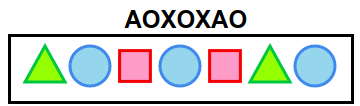
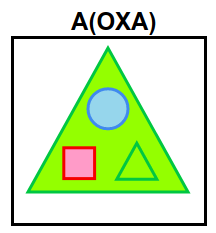
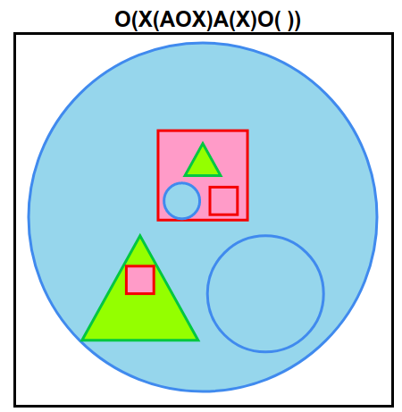
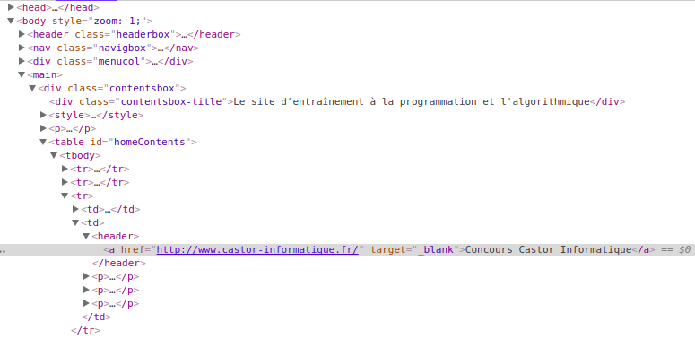

|
Le code A décrit le dessin : | . |
| Le code A décrit le dessin : | . |
À votre tour, créez le dessin décrit par le code :
ACliquez sur l'emplacement souhaité.
Tout d'abord, il faut déduire la correspondance entre les lettres et les formes.
Une lettre suivie d'un texte entre parenthèses correspond à une grande forme contenant des formes plus petites. Les lettres entre les parenthèses correspondent aux petites formes à l'intérieur. Ces formes sont données dans l'ordre suivant : celle d'en haut au milieu, puis celle d'en bas à gauche, puis celle d'en bas à droite.
Les parenthèses peuvent être imbriquées, c'est-à-dire placées les unes à l'intérieur des autres, ce qui permet d'avoir des grandes formes qui contiennent des formes de taille moyenne, et ces formes moyennes contiennent des petites formes.
Notez que des parenthèses ne contiennent pas forcément trois formes. Elles peuvent en contenir moins, par exemple une seule comme dans le code A(X), ou bien aucune comme dans le code O().
  
Ce sujet illustre une méthode très utilisée notamment en informatique : l'utilisation d'un langage textuel avec des imbrications, afin de représenter une structure arborescente. Les imbrications sont par exemple matérialisées par des parenthsèses. Une structure arborescente apparaît dès qu'on a des éléments qui contiennent d'autres éléments, eux-mêmes pouvant contenir d'autres éléments et ainsi de suite.
Toutes les pages web sur internet sont représentées de manière arborescente, avec des boîtes imbriquées les unes dans les autres, jusqu'à des boîtes qui contiennent des mots ou bien des images. La plupart des navigateurs modernes permettent de visualiser très facilement la structure de la page. Pour tester cela, ouvrez votre page web préférée, par exemple la page d'un moteur de recherche, et cliquez avec le bouton sur un morceau de texte ou une image, et cherchez dans le menu qui s'affiche le menu Inspecter l'élément. Un outil de visualisation s'affichera, permettant de contrôler l'affichage de l'arbre des éléments. N'hésitez pas à cliquer un peu partout sur cet affichage pour comprendre ce qu'il représente.
Voici un exemple de telle visualisation obtenue sur le site France-ioi.
